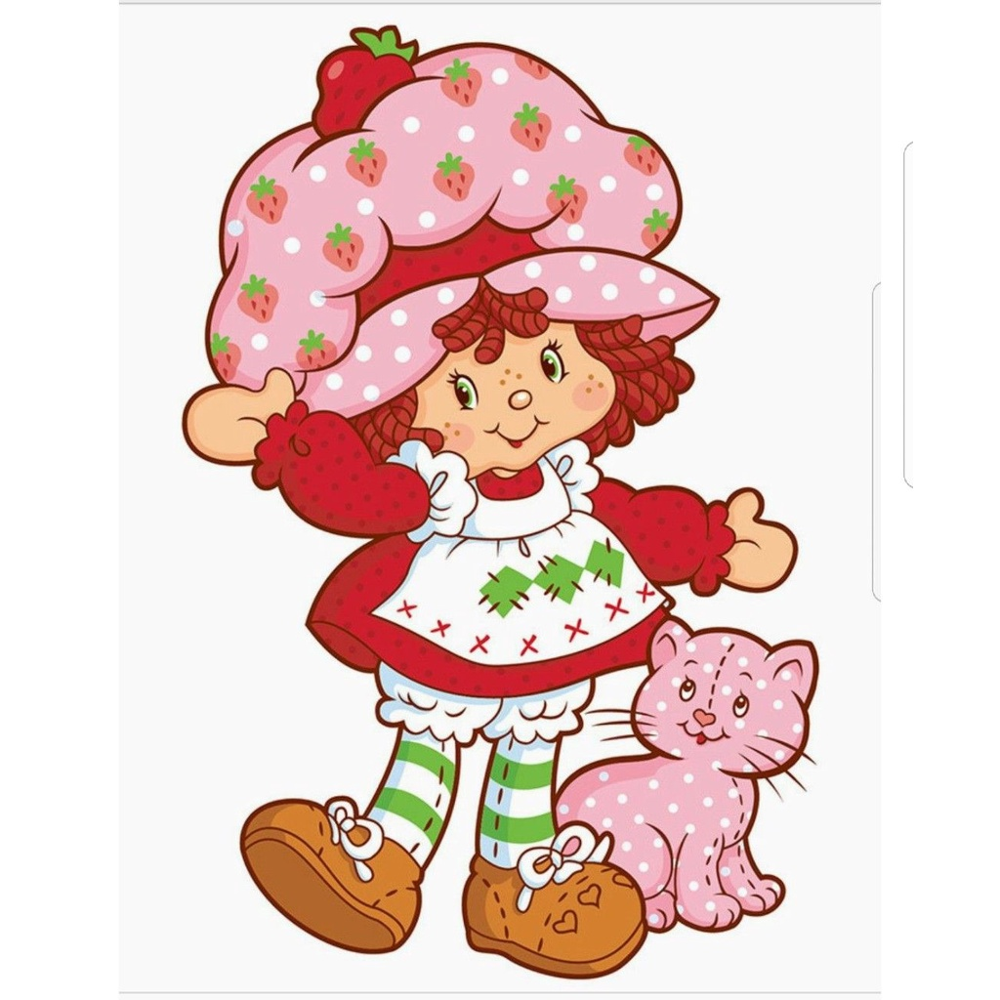

PAGINA UM
BIOGRAFIA

Senhorita morango mais conhecida como moranguinho e sua gata, Pudim foi criada em 1977 pela designer Muriel
Fahrion no Estados Unidos , Moranguinho nasceu em uma coleção da America Greetings, especializada em cartões
comemorativos.Desde que foi colocada nas telinhas da tv ,Durante os anos 80,a pequena bonequinha com nome de
sobremesa se tornou verdadeira mania entre as crianças ,fazendo parte da infacia de muitas gerações
©Silvana_Eduarda